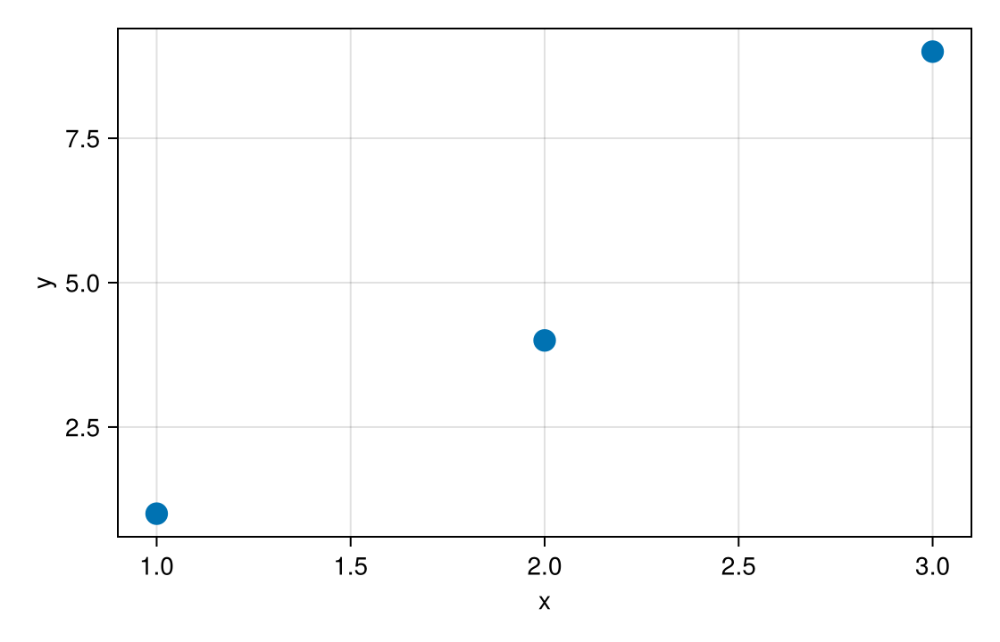

Getting started
Make one scatter plot interactive, then show your own data in its tooltips.
Install
Load Masque and a Makie backend in a Pluto cell, and Pluto installs both for you:
using Masque, CairoMakiePut each code block from these docs in its own cell.
Masque works with CairoMakie and WGLMakie. If you load both, masque uses CairoMakie. See Backends to choose between them.
Make a figure interactive
Create a figure the way you normally would. End the cell with nothing, or Pluto shows a second, static copy of the figure:
begin
xs = [1.0, 2.0, 3.0, 4.0]
ys = [2.0, 1.0, 4.0, 3.0]
fig = Figure(size = (560, 360))
ax = Axis(fig[1, 1])
scatter!(ax, xs, ys; markersize = 16)
nothing
endPass the figure to masque and bind the result to a variable:
@bind pick masque(fig)Hover over a point to see its index, x, and y. Clicking a point stores it in pick, and cells that use pick respond to the change:
isnothing(pick) ? "click a point" : "point $(pick.index) at x = $(pick.x)"pick is an ElementEvent, and pick.index is the clicked point's position in the data you plotted, so ys[pick] is its y.
masque(fig) works on scatters, lines, bars, heatmaps, polygons, text, legends, and colorbars. Recipes masque(fig) extracts has the full list.
Show your own data
The default tooltip shows coordinates. To show your own fields instead, pass the scatter to interactables with one payloads entry per point. Replace the figure cell with this one:
begin
xs = [1.0, 2.0, 3.0, 4.0]
ys = [2.0, 1.0, 4.0, 3.0]
fig = Figure(size = (560, 360))
ax = Axis(fig[1, 1])
s = scatter!(ax, xs, ys; markersize = 16)
points = [
(name = "one", x = 1.0, y = 2.0),
(name = "two", x = 2.0, y = 1.0),
(name = "three", x = 3.0, y = 4.0),
(name = "four", x = 4.0, y = 3.0),
]
pts = interactables(s; payloads = points)
nothing
endand pass pts to masque in the @bind cell:
@bind pick masque(fig, pts)Hovering a point now shows its name, x, and y, and clicking it sets pick.name.
The notebook below does the same with three points, recorded from a real notebook (see Static exports and this site).
Notebook as text
Hover over a point to see its name, then click it, and the last cell names the point you clicked.
Create the scatter the way you normally would, and end the cell with nothing so Pluto doesn't show the figure twice. Pass the scatter to interactables with one payloads entry per point, and the tooltip shows each point's fields.
begin
fig = Figure(size = (560, 360))
ax = Axis(fig[1, 1]; xlabel = "x", ylabel = "y")
points = [
(name = "one", x = 1.0, y = 1.0),
(name = "two", x = 2.0, y = 4.0),
(name = "three", x = 3.0, y = 9.0),
]
s = scatter!(ax, [p.x for p in points], [p.y for p in points]; markersize = 18)
pts = interactables(s; payloads = points)
nothing
end@bind sel saves a click in sel, while hovering only shows the tooltip and leaves sel as it was.
@bind sel masque(fig, pts)
sel starts as nothing, and this cell responds when you click a point. After a click, sel.name is the point's name and sel.index is its position in your data.
if isnothing(sel)
"click a point"
else
"$(sel.name) selected, y = $(sel.y)"
endclick a pointWhere to go next
- Concepts: how hover, clicks, payloads, and
@bindfit together - Tooltips: templates, number formatting, and dark figures
- Click marks: bars, polygons, lines, and polar points
- Brush a region: drag a box and get the points inside it
- Selection: start with a mark selected, or keep one across a rebuild
- Linked views: update another plot or a table from a click
- Examples: worked examples to copy
- Backends: CairoMakie or WGLMakie